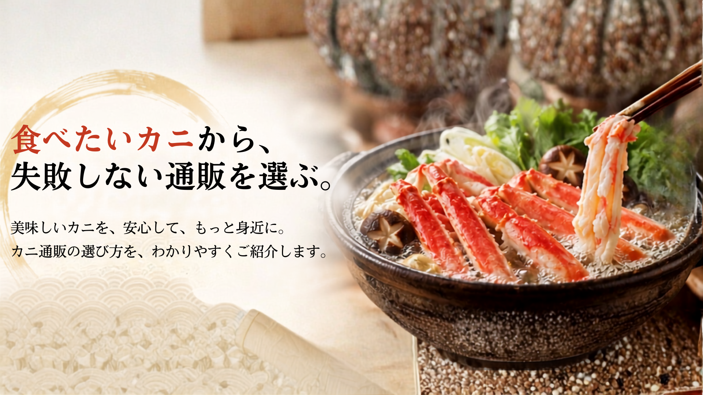
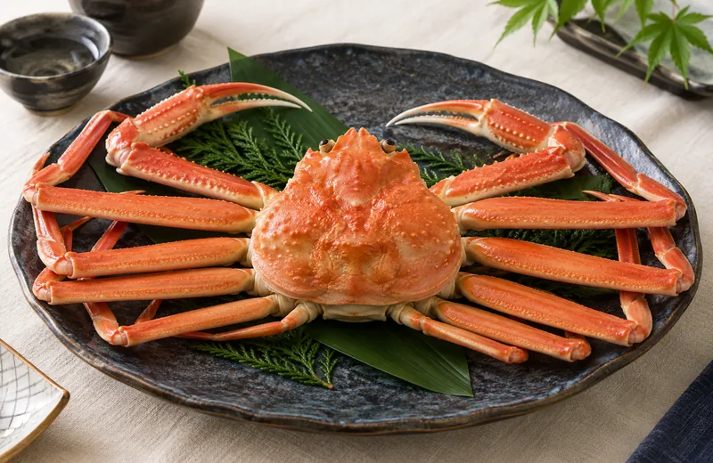
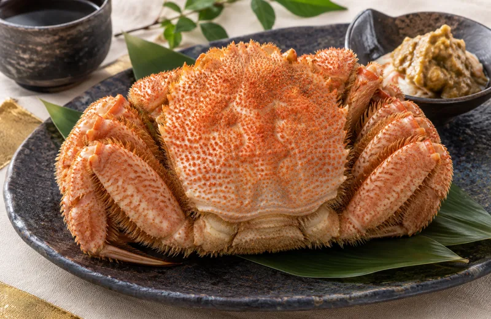
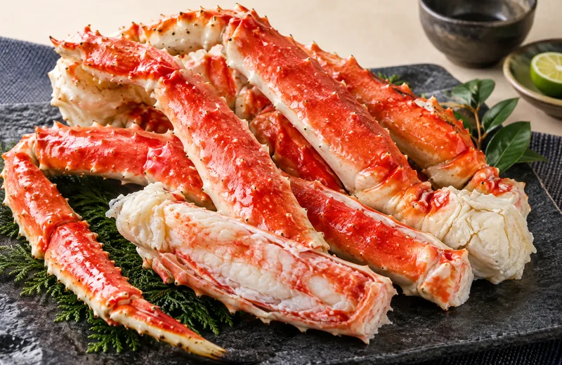
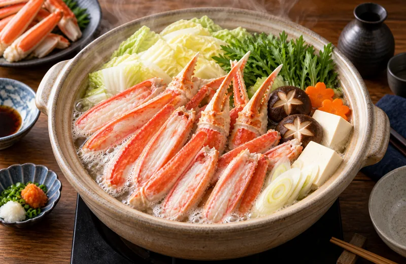
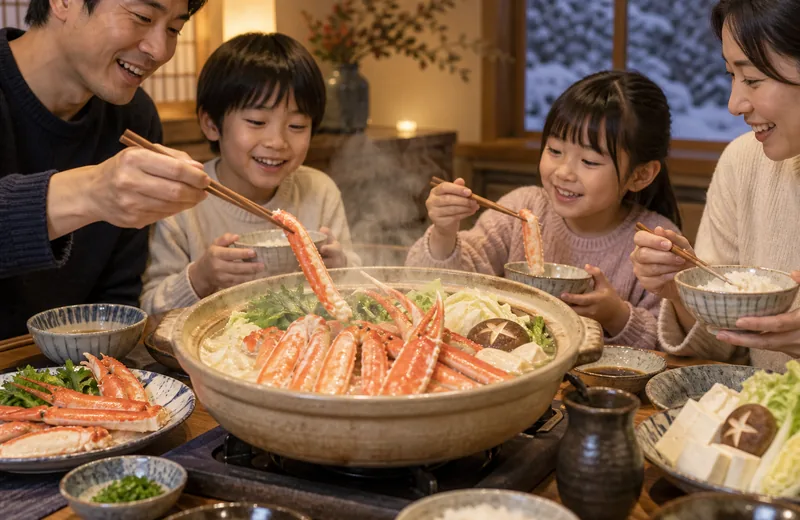
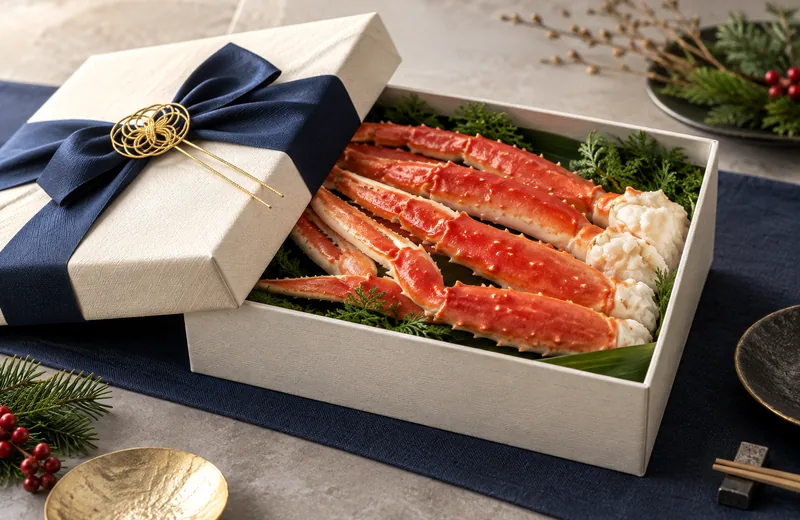
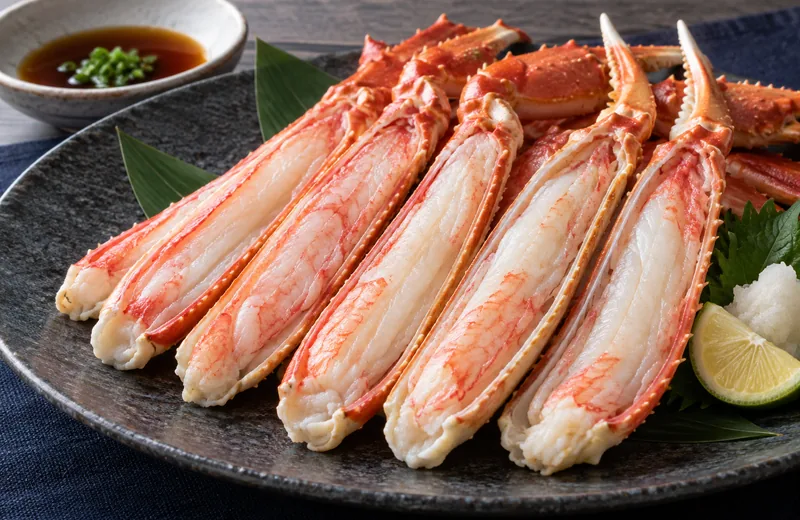
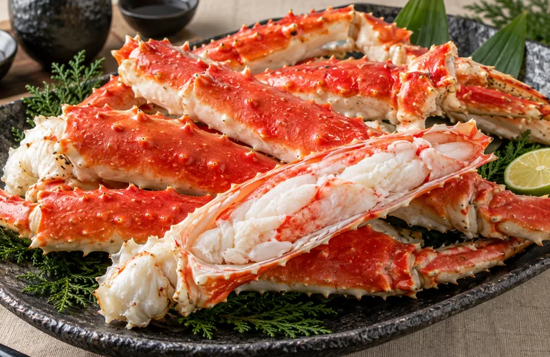

当サイトはアフィリエイト広告を利用しています
種類ごとの特徴を見比べてから、おすすめ通販を確認できます。

上品な甘みと繊細な身。刺身、しゃぶしゃぶ、鍋まで幅広く楽しめます。

濃厚なカニ味噌と繊細な身が魅力。量より味わいを大切にしたい人向けです。

太い脚としっかりした食感。見た目の豪華さと食べ応えを重視する人向けです。

家族や仲間と楽しみやすい冬の定番。食べやすいカット済み商品が便利です。




かに本舗
かにまみれ
各社